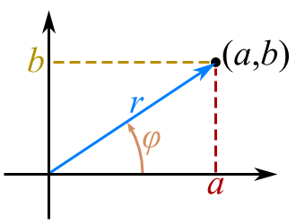

i = 12
print(i)
print(type(i))4 Tipos y estructuras de datos
Objetivo
El objetivo de esta clase es familiarizar a los estudiantes con el manejo de tipos y estructuras de datos fundamentales en Python, incluyendo números enteros, flotantes, complejos, cadenas de texto, listas, tuplas y diccionarios.
4.1 Enteros
Los enteros en Python o también conocidos como int, son un tipo de datos que permite representar números enteros, es decir, positivos y negativos no decimales. Si vienes de otros lenguajes de programación, olvídate de los int8, uint16 y demás. Python nos da un sólo tipo que podemos usar sin preocuparnosdel tamaño del número almacenado por debajo.
4.1.1 Introducción a int
Los tipos int en Python permiten almacenar un valor numérico no decimal ya sea positivo o negativo de cualquier valor. La función type() nos devuelve el tipo de la variable, y podemos ver com efectivamente es de la clase int.
En otros lenguajes de programación, los int tenían un valor máximo que pueden representar. Dependiendo de la longitud de palabra de la arquitectura del ordenador, existen unos números mínimos y máximos que era posible representar. Si por ejemplo se usan enteros de 32 bits el rango a representar es de \(-2^{31}\) a \(2^{31}–1\), es decir, \(-2\,147\,483\,648\) a \(2\,147\,483\,647\). Con 64 bits, el rango es de \(-9\,223\,372\,036\,854\,775\,808\) hasta \(9\,223\,372\,036\,854\,775\,807\). Una gran ventaja de Python es que ya no nos tenemos que preocupar de esto, ya que por debajo se encarga de asignar más o menos memoria al número, y podemos representar prácticamente cualquier número.
x = 250**250
print(x)
print(type(x))Para saber más: Si vienes de otras versiones de Python, tal vez eches de menos el tipo long. Puedes leer la PEP237, donde se explica porqué se unificaron los long y los int.
4.1.2 Datos adicionales de los enteros
En Python, un entero puede representarse, o interpretarse, en diferentes bases numéricas.
a = 0b100
b = 0x17
c = 0o720
print(a, type(a))
print(b, type(b))
print(c, type(c))num = 0x1F605
print(f"{num:#d}")
print(f"{num:#b}")
print(f"{num:#o}")
print(f"{num:#x}")
print(f"{num:#X}")
print(f"{num:c}")4.2 Punto flotante
El tipo numérico float permite representar un número positivo o negativo con decimales, es decir, números reales. Si vienes de otros lenguajes, tal vez conozcas el tipo double, lo que significa que tiene el doble de precisión que un float. En Python las cosas son algo distintas y los float son en realidad double.
Para saber más: Los valores float son almacenados de una forma muy particular, denominada representación en coma flotante. En el estándar IEEE 754 se explica con detalle.
Por lo tanto si declaramos una variable y le asignamos un valor decimal, por defecto la variable será de tipo float.
f = 0.10093
print(f)
print(type(f))4.2.1 Rango representable
Una curiosidad es que los float no tienen precisión infinita. Podemos ver en el siguiente ejemplo como en realidad f se almacena como si fuera 1, ya que no es posible representar tanta precisión decimal.
f = 0.99999999999999999
print(f)
print(1 == f)Los float a diferencia de los int tienen unos valores mínimo y máximos que pueden representar. La mínima precisión es \(2.2250738585072014\times 10^{-308}\) y la máxima \(1.7976931348623157\times 10^{+308}\), pero si no nos crees, lo puedes verificar tu mismo.
import sys
print(sys.float_info.min)
print(sys.float_info.max)De hecho si intentas asignar a una variable un valor mayor que el max, lo que ocurre es que esa variable toma el valor inf o infinito.
f = 1.7976931348623157e+310
print(f)Si quieres representar una variable que tenga un valor muy alto, también puedes crear directamente una variable que contenga ese valor inf.
f = float('inf')
print(f)
print(type(f))4.2.2 Precisión del float
Desafortunadamente, los ordenadores no pueden representar cualquier número y menos aún si este es uno irracional. Debido a esto, suceden cosas curiosas como las siguientes.
Dividir \(\frac{1}{3}\) debería resultar en \(0.\bar{3}\) periódico, pero para Python es imposible representar tal número.
print(f"{1/3:.20f}")Por otro lado, la siguiente operación debería tener como resultado cero, pero como puedes ver esto no es así.
print(0.1 + 0.1 + 0.1 - 0.3)Afortunadamente, salvo aplicaciones muy concretas, esto no resulta un problema. Al fin y al cabo, ¿a quién le importa lo que haya en la posición decimal 15?
4.3 Números complejos
En pocas palabras, los números complejos son aquellos que tienen dos partes:
- Una parte real, como por ejemplo \(3\) o \(7.5\).
- Y otra imaginaria, como \(j5\) o \(-j7\).
Como puedes ver, la parte imaginaria viene acompañada de \(j\), aunque es también común usar la \(i\). En python, un número complejo tiene la siguiente forma:
a = 5 + 5j
b = 1.3 - 7j
c = 10.3j
print(a)
print(b)
print(c)Note que la \(j\) se escribe después del número.
4.3.1 ¿Para qué sirven los números complejos?
Los números complejos son muy utilizados en las áreas relacionadas con la ingeniería electrónica, ya que son muy útiles para describir las ondas electromagnéticas y la corriente eléctrica.
También son usados en diferentes dominios de las matemáticas y en física, donde destaca su uso en la mecánica cuántica.
Un número complejo puede representarse en un plano de Argand, donde la abscisa representa la parte real y la ordenada, la imaginaria. Es decir, se puede ver a un número complejo \(a+jb\) como un punto de coordenadas.
Una vez representado en esta gráfica, cualquier número complejo formará un ángulo con el eje \(x\). Todo número complejo tiene también un módulo, que es la distancia que une el punto del origen de coordenadas \(0+j0\).
Ahora sólo tienes que imaginarte a este punto dando vueltas a una determinada frecuencia alrededor del plano y ya estarías describiendo a una onda sin haberte dado cuenta.
4.3.2 Números complejos en Python
Como se mostró anteriormente, los números complejos en Python pueden ser creados sin tener que importar ninguna librería. Basta con hacer lo siguiente:
c = 3 + 5j
print(c)
print(type(c))Podemos ver como la clase que representa a los complejos en Python se llama complex. Una vez creado, es posible acceder a la parte real con real y a la imaginaria con imag.
c = 3 + 5j
print(c.real)
print(c.imag)También se puede crear un número complejo haciendo uso del constructor complex, pero sin usar la j.
c = complex(3,5)
print(c)4.3.3 Operaciones con números complejos en Python
Usando variables del tipo complex, podemos realizar las operaciones más comunes típicas de los números complejos.
Suma y resta
a = 1 + 3j
b = 4 + 1j
print(a+b)
print(a-b)Multiplicación y división
a = 1 + 3j
b = 4 + 1j
print(a*b)
print(f'{a/b:1.2f}')Conjugado
a = 1 + 1j
print(a.conjugate())4.3.4 Librería cmath
Si quieres realizar más operaciones con número complejos, tal vez quieras echar un vistazo a la librería cmath, que es mucho más completa.
Algunas de las cosas que puedes hacer son las siguientes:
- Calcular la fase, que es el ángulo que forma el vector con el eje \(x\), en radianes.
- Calcular la forma polar, es decir módulo y ángulo.
import cmath
print(cmath.phase(complex(5, 0)))
print(cmath.polar(complex(5, 5)))4.4 Cadenas
Las cadenas en Python o strings son un tipo inmutable que permite almacenar secuencias de caracteres. Para crear una, es necesario incluir el texto entre comillas " o apóstrofos '. Puedes obtener más ayuda con el comando help(str).
s = 'Esto es una cadena'
print(s)
print(type(s))Se pueden usar una serie de secuencias de escape que se resumen a continuación:
Secuencia de escape |
Significado |
|---|---|
|
Barra inversa ( |
|
Comilla simple ( |
|
Comilla doble ( |
|
Retroceso (BS) |
|
Salto de línea (LF) |
|
Retorno de carro (CR) |
|
Carácter unicode |
print('correr\rhol')
print('')
print('\u2150\u21aa')
print('')
print('1\t2')4.4.1 Cadenas formateadas
Las f-strings, o cadena de caracteres con formato, brindan una manera fácil de formatear la salida que se desea mostrar con la función print(). Con una f-string, puede crear mensajes que contengan el contenido de variables y puede dar formato a los números de varias formas. Una f-string se especifica con una f antes de la cadena de caracteres, por ejemplo:
name = 'Carlina'
print(f'Hello {name}')
temperatura = 45
print(f'La temperatura actual es de {temperatura}°C')En los ejemplos anteriores de f-string, usamos marcadores de posición (placeholder en inglés) delimitados por llaves, i.e. {placeholder}, para mostrar los valores de las variables. Además de los nombres de las variables, los marcadores de posición pueden contener cualquier expresión válida.
name = 'Carlina'
print(f'Hola {name}')
temperatura = 45
print(f'La temperatura actual es de {temperatura} °C')
val = 10
print(f'El valor es {val + 2:0.2f}.')Formateado de valores numéricos
Los marcadores de posición en una f-string pueden incluir un especificador de formato (format-specifier) que hace que el valor del marcador de posición se formatee cuando se muestra. Por ejemplo, con un especificador de formato puede redondear valores a un número específico de lugares decimales y mostrar números con separadores de coma. También puede alinear valores a la izquierda, a la derecha o al centro con un especificador de formato. De hecho, puede usar especificadores de formato para controlar muchas de las formas en que se muestran los valores.
El formato general para escribir un marcador de posición con un especificador de formato es:
{placeholder:format-specifier}Números de punto flotante
Es posible que no siempre se esté satisfecho con la forma en que se muestran los números de punto flotante en la pantalla, dado que cuando la función de impresión muestra un número de punto flotante, pueden aparecer hasta 17 dígitos significativos.
cantidad_total = 5000000
abono_capital = cantidad_total / 12
print(f'El abono a capital mensual es $ {abono_capital:,.2f}')Dado que en muchas ocasiones los números de punto flotante pueden representar cantidades en las que algunas cifras decimales carecen de sentido, es posible especificar la forma en la que se muestran. Por ejemplo, en el ejemplo anterior solo tendrían sentido los primeros dos decimales y, al ser una cantidad de dinero, es adecuado usar separación de miles.
Para mayor información se puede consultar la documentación PEP o las siguientes hojas de referencia Cheat-sheet 1, Cheat-sheet 2
Los números decimales entre 0 y 1 que representen porcentajes se pueden formatear de la siguiente manera:
discount = 0.1556546515
print(f'{discount:.2%}')
print(f'{discount:.0%}')Si se prefiere usar notación científica, se puede usar la letra e o E en lugar de f. Además, si se usa g como opción, el formato es automático según el orden de magnitud.
number = .123456789
print(f'{number:e}')
print(f'{number:.2E}')
print(f'{number:.5g}')Formatos de ancho fijo
En ocasiones es necesario que los datos que se muestren tengan un ancho fijo, con el fin de mejorar la visualización de la información. En este caso se puede especificar la longitud como primer argumento del formato:
name1 = 'Tere'
name2 = 'Mario'
name3 = 'Camilo'
name4 = 'Patricia'
last1 = 'Gómez'
last2 = 'Martínez'
last3 = 'Zárate'
last4 = 'Castañeda'
print('Nombre','Apellido','\n====== ========')
print(name1,last1)
print(name2,last2)
print(name3,last3)
print(name4,last4,'\n')
print(f"{'Nombre':15} {'Apellido':15}")
print(f"{'======':15} {'========':15}")
print(f"{name1:15} {last1:15}")
print(f"{name2:15} {last2:15}")
print(f"{name3:15} {last3:15}")
print(f"{name4:15} {last4:15}")Justificación del texto
Cuando se muestra un valor en un campo que es más ancho que el valor, sería adecuado alinear el valor a la derecha, a la izquierda o al centro del campo. Por defecto, los números se alinean a la derecha y las cadenas de caracteres a la izquierda. Esto se puede modificar con el especificador de formato <, > o ^, según se quiera justificar a la izquierda, derecha o centro, respectivamente.
numero = 12
print(f"El número es |{numero:10}|")
print(f"El número es |{numero:<10}|")
print(f"El número es |{numero:^10}|")
name = 'Federico'
print(f"El nombre es |{name:10}|")
print(f"El nombre es |{name:>10}|")
print(f"El nombre es |{name:^10}|")
print('\n')
# Orden Justificación, ancho, coma, punto, p, tipo
cantidad = 1256354.6598
print(f'|Saldo a favor: $ {cantidad:<20,.2f}|')4.5 Listas
Las listas en Python son un tipo de dato que permite almacenar datos de cualquier tipo. Son mutables y dinámicas, lo cual es la principal diferencia con los sets y las tuplas.
4.5.1 Crear listas en Python
Las listas en Python son uno de los tipos o estructuras de datos más versátiles del lenguaje, ya que permiten almacenar un conjunto arbitrario de datos. Es decir, podemos guardar en ellas prácticamente lo que sea. Una lista sea crea con [] separando sus elementos con comas ,. Una gran ventaja es que pueden almacenar tipos de datos distintos.
lista = [1, "Hola", 3.67, [1, 2, 3]]
print(lista)También se puede crear usando list y pasando un objeto iterable.
lista = list("1234")
print(lista)Algunas propiedades de las listas:
- Son ordenadas, mantienen el orden en el que han sido definidas
- Pueden ser formadas por tipos arbitrarios
- Pueden ser indexadas con
[i] - Se pueden anidar, es decir, meter una dentro de la otra.
- Son mutables, ya que sus elementos pueden ser modificados.
- Son dinámicas, ya que se pueden añadir o eliminar elementos.
4.5.2 Acceder y modificar listas
Si tenemos una lista a con 3 elementos almacenados en ella, podemos acceder a los mismos usando corchetes y un índice, que va desde 0 a n-1 siendo n el tamaño de la lista.
a = [90, "Python", 3.87]
print(a[0])
print(a[1])
print(a[2])También se puede acceder a los elementos de una lista a partir del último elemento usando índices negtivos, iniciando con [-1].
a = [90, "Python", 3.87]
print(a[-1])
print(a[-2])
print(a[-3])También es posible crear sublistas más pequeñas de una más grande. Para ello debemos de usar : entre corchetes, indicando a la izquierda el valor de inicio y a la derecha el valor final que no está incluido, similar a range(). Por lo tanto [0:2] creará una lista con los elementos [0] y [1] de la original.
l = [1, 2, 3, 4, 5, 6]
print(l[0:2])
print(l[2:6])Si queremos modificar un elemento de la lista, basta con asignar con el operador = el nuevo valor.
a = list(range(1,10))
print(a,'\n')
a[2] = 1
print(a)l = list(range(1,10))
print(l,'\n')
l[0:3] = [0, 0, 0]
print(l)Hay ciertos operadores como el + que pueden ser usados sobre las listas.
l = [1, 2, 3]
l += [4, 5]
print(l)Y una funcionalidad muy interesante es que se puede asignar una lista con n elementos a n variables.
l = [1, 2, 3]
x, y, z = l
print(x, y, z)4.5.3 Iterar listas
En Python es muy fácil iterar una lista, mucho más que en otros lenguajes de programación.
lista = [5, 9, 10]
for l in lista:
print(l)Si necesitamos un índice acompañado con la lista, que tome valores desde 0 hasta n-1, se puede hacer de la siguiente manera.
lista = [5, 9, 10]
for index, l in enumerate(lista):
print(index, l)O si tenemos dos listas y las queremos iterar a la vez, también es posible hacerlo.
lista1 = [5, 9, 10]
lista2 = ["Jazz", "Rock", "Djent"]
for l1, l2 in zip(lista1, lista2):
print(l1, l2)4.5.4 Métodos de listas
append()
l = [1, 2]
l.append(3)
print(l)extend()
l = [1, 2]
l.extend([3, 4])
print(l)insert()
l = [1, 3]
l.insert(1, 2)
print(l)remove()
l = [1, 2, 3]
l.remove(3)
print(l)pop()
l = [1, 2, 3]
l.pop()
print(l)reverse()
l = [1, 2, 3]
l.reverse()
print(l)sort
l = [3, 1, 2]
l.sort()
print(l)l = [3, 1, 2]
l.sort(reverse=True)
print(l)index
l = ["Periphery", "Intervals", "Monuments"]
print(l.index("Intervals"))l = [1, 1, 1, 1, 2, 1, 4, 5]
print(l.index(1, 4))4.6 Tuplas
Las tuplas en Python son un tipo o estructura de datos que permite almacenar datos de una manera muy parecida a las listas, con la salvedad de que son inmutables.
4.6.1 Creación de tuplas
Las tuplas en Python son muy similares a las listas, pero con dos diferencias. Son inmutables, lo que significa que no pueden ser modificadas una vez declaradas, y en vez de inicializarse con corchetes se hace con () -Aunque no es necesario-. Dependiendo de lo que queramos hacer, las tuplas pueden ser más rápidas.
tupla = (1, 2, 3)
print(type(tupla))
print(tupla) tupla = 1, 2, 3
print(type(tupla))
print(tupla) 4.6.2 Métodos de tuplas
count()
l = [1, 1, 1, 3, 5]
print(l.count(1))index()
l = [7, 7, 7, 3, 5]
print(l.index(5))l = [7, 7, 7, 3, 5]
print(l.index(7, 2))4.7 Diccionarios
Los diccionarios en Python son una estructura de datos que permite almacenar su contenido en forma de llave y valor.
4.7.1 Crear diccionarios en Python
Un diccionario en Python es una colección de elementos, donde cada uno tiene una llave key y un valor value. Los diccionarios se pueden crear con llaves {} separando con una coma cada par key:value.
d1 = {
"Nombre":"Sara",
"Edad":27,
"Documento":1003882
}
print(d1)Otra forma equivalente de crear un diccionario en Python es usando dict() e introduciendo los pares key:value como tuplas.
d2 = dict([
('Nombre', 'Sara'),
('Edad', 27),
('Documento', 1003882),
])
print(d2)4.7.2 Acceder y modificar elementos
Se puede acceder a sus elementos con [] o también con la función get().
print(d1['Nombre'])
print(d1.get('Nombre'))Para modificar un elemento basta con usar [] con el nombre del key y asignar el valor que queremos.
d1['Nombre'] = "Laura"
print(d1)Si el key al que accedemos no existe, se añade automáticamente.
d1['Direccion'] = "Calle 123"
print(d1)4.7.3 Iterar diccionarios
Los diccionarios se pueden iterar de manera muy similar a las listas u otras estructuras de datos. Para imprimir los key.
for x in d1:
print(x)Se puede imprimir también solo el value.
for x in d1:
print(d1[x])O si queremos imprimir el key y el value a la vez.
for x, y in d1.items():
print(x, y)4.7.4 Métodos de diccionarios
clear()
d = {'a': 1, 'b': 2}
d.clear()
print(d)get()
d = {'a': 1, 'b': 2}
print(d.get('a')) #1
print(d.get('z', 'No encontrado'))items()
d = {'a': 1, 'b': 2}
it = d.items()
print(it)
print(list(it))
print(list(it)[0][0])keys()
d = {'a': 1, 'b': 2}
k = d.keys()
print(k)
print(list(k))values()
d = {'a': 1, 'b': 2}
print(list(d.values()))pop()
d = {'a': 1, 'b': 2}
d.pop('a')
print(d)d = {'a': 1, 'b': 2}
d.pop('c', -1)popitem()
d = {'a': 1, 'b': 2}
d.popitem()
print(d)update()
d1 = {'a': 1, 'b': 2}
d2 = {'a': 0, 'd': 400}
d1.update(d2)
print(d1)4.8 Ejercicios prácticos
- Cree un nuevo Notebook.
- Guarde el archivo como Ejercicios_practicos_clase_4.ipynb.
- Asigne un título H1 con su nombre.
4.8.1 Ejercicio práctico 1
- Utiliza la librería
randompara generar una lista de cinco números complejos aleatorios. La parte real e imaginaria de cada número deben ser números flotantes aleatorios entre-10y10 - Escribe una función
magnitudes()que reciba una lista de números complejos y devuelva una lista con las magnitudes de estos números - Escribe una función
mayor_magnitud()que reciba una lista de números complejos y devuelva el número con la mayor magnitud - Muestra los números generados, sus magnitudes y el número con la mayor magnitud
4.8.2 Ejercicio práctico 2
- Crea una lista de cinco nombres ficticios para estudiantes
- Utiliza la librería
randompara generar una lista de diccionarios, donde cada diccionario representa a un estudiante con las siguientes claves:nombre: un nombre tomado al azar de la lista de nombresedad: una edad aleatoria entre 18 y 25notas: una tupla con tres notas flotantes aleatorias entre 0 y 5
- Escribe una función
imprimir_estudiantes()que reciba la lista de diccionarios y muestre en pantalla la información de cada estudiante en el siguiente formato:
Estudiante: {nombre}
Edad: {edad}
Notas: {notas}
========================================
Estudiante: {nombre}
Edad: {edad}
Notas: {notas}
- Genera los datos de los estudiantes y utiliza la función
imprimir_estudiantes()para mostrar la información generada